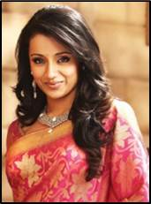
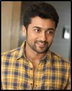

Vijay, Joseph Vijay Chandrasekhar, is an Indian actor, playback singer and producer. He is the son of film director and producer S. A. Chandrasekhar and Shoba Chandrasekhar. He has a sister, Vidhya Chandrasekhar. He was born on the 22nd of June, 1974 and in Chennai, India. Vijay started his career as a child and acted in the movie Vetri and he made a hit film as a lead actor in the 1992 film, Naalaya Theerpu. Vijay has made many movies such as Puli, Kathi, Jilla, Nanban, Thuppakki and Thalaivaa.

Trisha Krishnan, is an Indian actress and model. Her parents were Uma Krishnan and Krishnan. She was born on the 4th of May 1983 and in Chennai, India. Trisha was noticed for winning several beauty pageants and that was how she started acting in films. Trisha has made many movies such as Yennai Arindhaal, Sakalakala Vallavan, Khatta Meetha, Lion and Vinnaithaandi Varuvaayaa.

Suriya, Saravanan Sivakumar, is an Indian film actor, producer, philanthropist and television presenter. His parents were Sivakumar and Lakshmi. Suriya has a brother, Kathik, and a sister, Brindha Sivakumar. He was born on the 23rd of July 1975 and in Coimbatore, India. Suriya has married actress Jyothika in 2006 and they have two children a son, Dev Savikumar, and a daughter, Diya Savikumar. Suriya has acted in many films such as Masss, Anjaan, Singam, Singam 2 and Maattrraan.